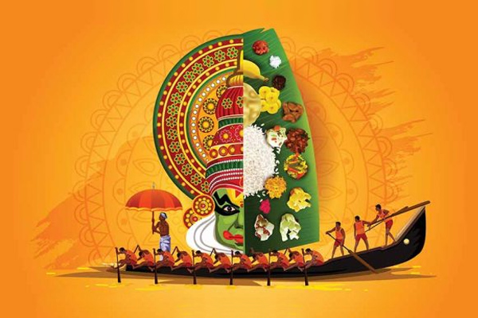
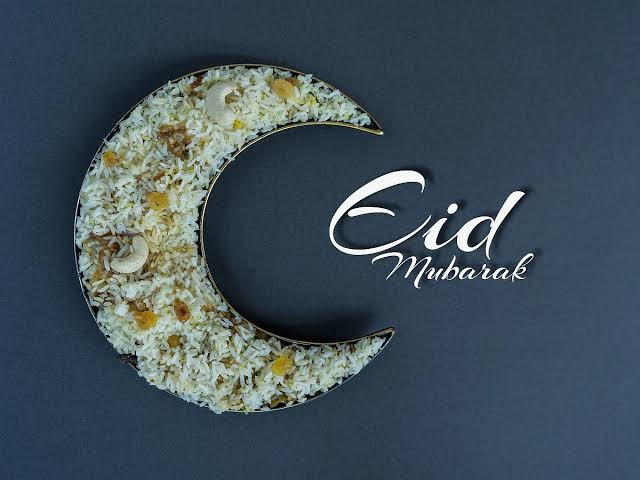
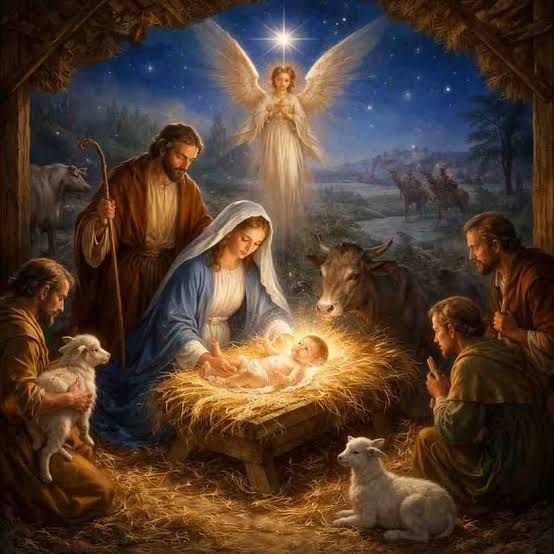

Onam is a famous harvest festival celebrated with great joy and enthusiasm, mainly in the southern Indian state of Kerala.he festival marks the beginning of the Malayalam calendar month called Chingam and celebrates a bountiful agricultural harvest. It honors the legend of King Mahabali, a kind and beloved ruler who is believed to return and visit his subjects every year during this time.

Eid is a major Islamic holiday celebrated by Muslims globally, consisting of two main festivals called Eid al-Fitr and Eid al-Adha. Eid al-Fitr marks the joyful conclusion of Ramadan, the holy month of fasting, while Eid al-Adha commemorates the devotion of the Prophet Ibrahim and coincides with the completion of the annual Hajj pilgrimage. Both occasions are deeply spiritual times for communal prayers, wearing new clothes, feasting with family, and giving charity to those in need. Because the Islamic calendar is lunar, the exact dates of these festivals change every year based on local moon sightings.

Christmas is an annual festival celebrated on December 25th by billions of people worldwide to commemorate the birth of Jesus Christ. While it is rooted in Christian tradition as a deeply spiritual holiday, it is also celebrated globally as a widespread cultural and secular event. Families and friends come together during this festive season to exchange gifts, share large meals, and decorate their homes with lights, wreaths, and Christmas trees. The holiday season is also heavily associated with the iconic figure of Santa Claus, who brings joy and presents to children on Christmas Eve. Ultimately, the festive season spreads a universal message of love, peace, generosity, and goodwill to all.